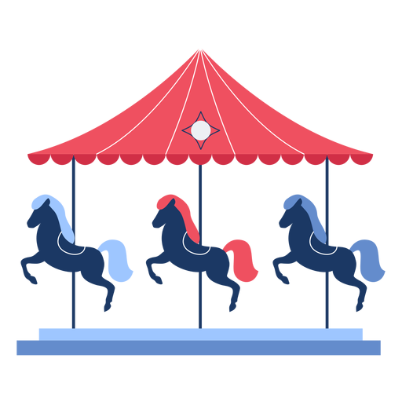
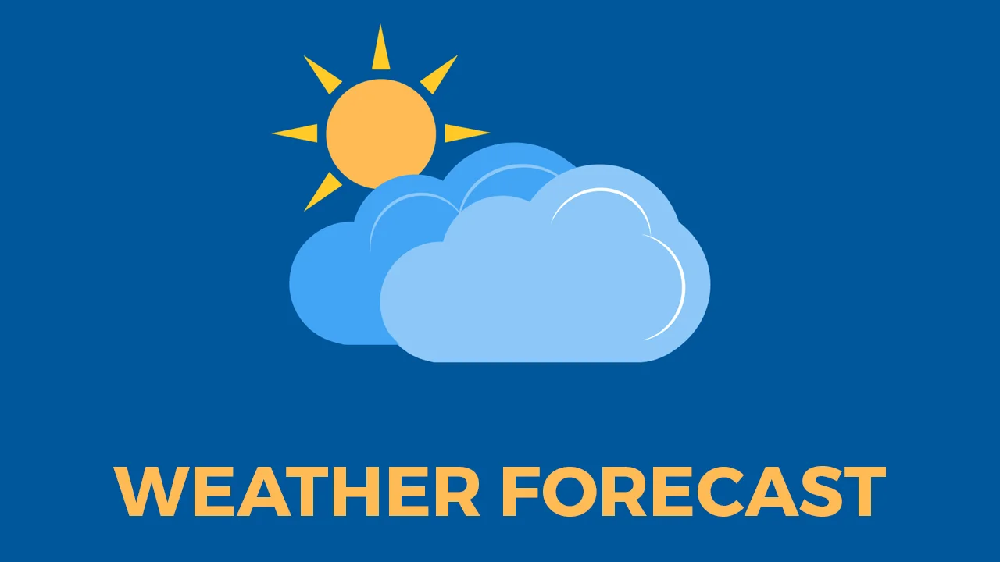
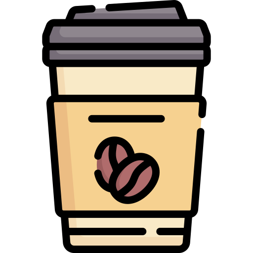

Connect Me
Feel free to reach out to me for any inquiries!
I'm a passionate Front-End Developer with experience in HTML, CSS, JavaScript, and React. I love creating dynamic, user-friendly websites and applications. My goal is to continually improve and expand my skillset. My expertise lies in leveraging modern web technologies such as HTML, CSS, and JavaScript framework (React) to build responsive and intuitive interfaces. In the Back-end I have knowledge with Node development using JavaScript, with SQL, noSQL banks and tools such as Sequelize, TypeORM, Express, Docker, MongoDB.

FPsellection is a digital project I created, aimed at showcasing a selection of luxury cars, including iconic models like the Porsche 911, Ferrari and Lamborghini.The website offers an interactive and immersive experience, highlighting the features and technical specifications of the vehicles. Using modern technologies like HTML, CSS, and JavaScript, I developed a dynamic image carousel, smooth animations, and a responsive layout, ensuring a fluid and visually striking navigation. The project serves as a true digital showcase for enthusiasts of high-performance cars and sophisticated design.
Learn More
This React project displays the weather forecast for the next 5 days, using the OpenWeatherMap API. The app shows information such as minimum and maximum temperatures, weather conditions, and illustrative icons for each day. The interface is fully responsive, ensuring an optimised user experience across mobile, tablet, and desktop devices. The deployment is done using GitHub Pages, providing easy access and viewing on any device.
Learn More
developed a frontend project inspired by Cafena, a fictional coffee shop. Using modern technologies such as HTML, CSS, and JavaScript, I created a responsive and visually appealing design, highlighting the brand's visual identity and providing an intuitive browsing experience. This project showcases skills in interface design and attention to detail in web development.
Learn MoreFor a better experience, we suggest that you check the projects on a desktop.